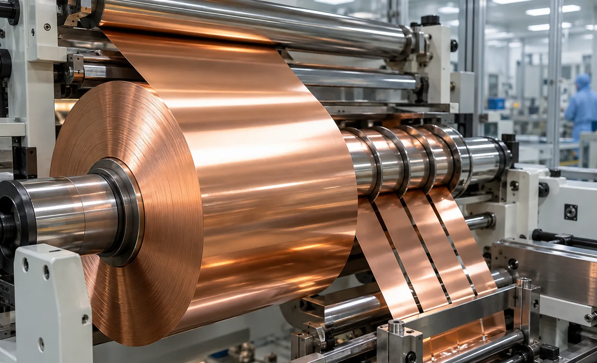
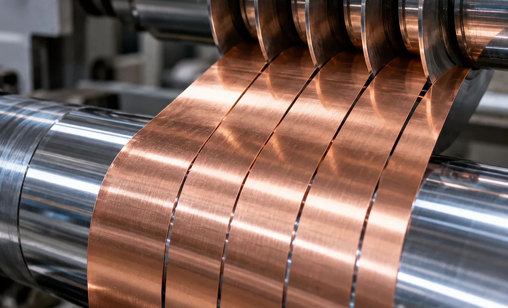

Published September 23, 2026 | By HDPTH Technical Editorial Team

Copper foil for lithium-ion anodes, flex circuits and shielding is thin, ductile and electrically unforgiving. A raised edge that would be invisible on a nonwoven becomes a puncture risk once wound against a separator; a loose particle becomes a latent short. That is why foil specifications differ from paper or film ones — and why a general-purpose slitter sold on speed disappoints on edge quality.
Start with the thickness range, not the machine size
Battery anode foil sits in the single-digit to low-double-digit micron range; foil for flex circuits, shielding and heavier applications runs tens of microns and above. State the full range you intend to run, because knife clearance, knife geometry, tension window and roller support all change with gauge. A machine optimised for thicker foil loses edge quality on ultra-thin grades, and one built purely for the thinnest foil is needlessly delicate on heavier material. If you run both, make the vendor prove both.
Why burrs form
A burr is metal torn or rolled over rather than cleanly sheared. In rotary shear slitting the usual causes are:
- Excess lateral clearance: the gap between knives is larger than the gauge allows, so the foil bends and tears instead of shearing.
- Wrong overlap: vertical engagement set for another thickness gives a rolled or ragged edge.
- Runout and deflection: knife runout, shaft deflection or bearing play makes the knife rub and smear metal sideways.
- Dull edges: a worn edge stops cutting and starts pushing, so track knife life by run length and edge inspection.
Because correct clearance is a small fraction of foil thickness, mechanical precision dominates: holder rigidity, shaft runout, bearing condition and the thermal stability of the slitting station all show up at the cut edge. See knife clearance and overlap and knife holder and mounting.
Choosing the cutting method
Rotary shear is the standard for copper foil: two circular knives cut in a scissor action with a settable clearance, giving a square edge with minimal deformation. Razor slitting deflects thin foil and gives a less controlled edge; score cutting crushes the web against an anvil, producing deformation and dust. Edge trim is cut by the same knives or a dedicated trim unit and extracted continuously rather than allowed to accumulate. See shear, razor and score slitting.
Knives, materials and setting discipline
Specify knife material and edge geometry appropriate to copper — hardened tool steel or tungsten carbide with a ground, honed edge — and ask how many regrinds a blade is rated for. Ask whether knife setting is manual or assisted and how clearance is verified. Automatic positioning helps where slit widths change often, but must repeat clearance, not just lateral position; see automatic blade changing and knife sharpening.
Tension: the second half of edge quality
Thin copper yields plastically, so a tension spike stretches it permanently and a dip lets it wrinkle or telescope. Specify closed-loop architecture with load-cell feedback and low-friction idlers, define the tension window for your thinnest grade, and confirm how tension tapers as diameter builds. Ask for measured variation at production speed and at the splice, and check acceleration and deceleration — most foil damage happens there, not at steady state. See load cell versus dancer control, tension zone architecture and taper tension.
Winding, contact pressure and roll build
Foil rolls are sensitive to nip pressure and to differential length between slits. Consider differential rewind shafts, controlled lay-on roller loading and a winding mode matched to your product — see center versus surface winding. Confirm chuck type and shaft deflection at maximum roll weight; a deflecting shaft causes hardness variation and outer-layer edge damage.
Cleanliness and cleanroom compatibility
Copper particles from the cut are the product defect, so treat extraction as process equipment, not an accessory. Specify capture close to the knives, filtration for fine metal particles and safe dust collection. For dry-room or cleanroom installation, check that surfaces are non-shedding and cleanable, lubrication is enclosed and cabinets are sealed. Static control matters on foil too — see static control and web cleaning systems.
| Specification | What to require | Why it matters |
|---|---|---|
| Thickness range | Full gauge range proven on your thinnest and thickest foil | Clearance, tension and support change with gauge |
| Cutting method | Rotary shear with settable clearance and overlap; trim extracted | Score and razor cutting deform or deflect thin foil |
| Knives | Stated steel or carbide grade, edge geometry, regrinds, runout limit | Micron-level clearance error shows up as burr |
| Tension | Closed-loop control, window for thinnest grade, taper, measured variation | Foil yields plastically; spikes stretch, dips wrinkle |
| Winding | Differential shafts, controlled lay-on pressure, deflection limit | Hardness variation and telescoping damage outer layers |
| Cleanliness | Local extraction, fine filtration, sealed cabinets | Copper particles become latent shorts downstream |
| Acceptance | Burr height, slivers, slit width tolerance — on your foil at speed | Only measured edge quality predicts cell yield |

Acceptance criteria to agree before the machine is built
- Burr height: instrument, magnification, sampling positions, limit relative to foil thickness.
- Slivers and particles: counting method and limit, checked after winding, not at the knife only.
- Slit width tolerance: over a defined roll length at speed — see slit width tolerance.
- Test conditions: your foil, width and slit pattern, production speed, defined run length.
Put these into the contract and the factory acceptance test with a stated remedy; see our performance guarantee guide. Where a cell line already measures edge quality, feed that method into the acceptance protocol.
Specifying a foil slitting line?
Send HDPTH your foil grade, thickness range, width, slit pattern and cleanliness requirements. We will propose a shear cutting, tension and extraction configuration and define measurable acceptance criteria.
Submit Your Project InquiryQuestions to put to every vendor
- What knife clearance and overlap do you recommend for my thinnest foil, and how is it verified?
- What is the measured knife runout and shaft deflection at the slitting station?
- What tension variation can you demonstrate at speed and during acceleration?
- How is copper dust captured, filtered and collected, and at what filter interval?
- What burr, sliver and particle limits will you sign off, measured how and on which material?
Related reading
Our battery separator slitter guide covers the adjacent process, and the inspection system guide explains inline edge and particle verification.
Contact HDPTHFrequently asked questions
What copper foil thickness range should a slitter rewinder cover?
State the full range you will run, not just today's grade. Battery anode foil sits in the single-digit to low-double-digit micron range; foils for flex circuits and shielding run tens of microns and above. Knife clearance, tension and roller support all change with gauge, so a machine optimised for thick foil loses edge quality on ultra-thin grades, and one built only for the thinnest foil is needlessly delicate and slow on heavier material.
Why do burrs form when slitting copper foil?
A burr is metal torn or rolled over instead of cleanly sheared. It appears when lateral knife clearance is too large for the gauge, when overlap is wrong, when runout or shaft deflection makes the knife rub rather than cut, or when a dulled edge starts pushing metal sideways. Because the correct clearance is a small fraction of foil thickness, small mechanical errors have large effects on the cut edge.
Which slitting method is used for copper foil?
Rotary shear is the standard: two circular knives cut in a scissor action at a settable clearance, giving a square edge with minimal deformation. Razor slitting deflects thin foil and gives a less controlled edge; score cutting crushes the web against an anvil, producing deformation and dust. Edge trim is cut by the same knives or a dedicated trim unit and extracted continuously.
How accurate does tension control need to be for copper foil?
Very accurate, because thin copper yields plastically: a tension spike stretches it permanently and a dip lets it wrinkle or telescope. Specify closed-loop control with low-friction idlers and load-cell feedback, define the tension window for your thinnest grade, and confirm taper as diameter builds so outer layers are not crushed. Ask for measured tension variation at production speed.
How should burr height be verified during acceptance?
Agree the method before the machine is built: sampling positions across width and along roll length, instrument and magnification, and readings per sample. Burr height is judged against foil thickness rather than as an absolute micron figure, and the test should also cover slivers, loose particles, edge waviness and slit width tolerance. Run it on your foil at production speed.